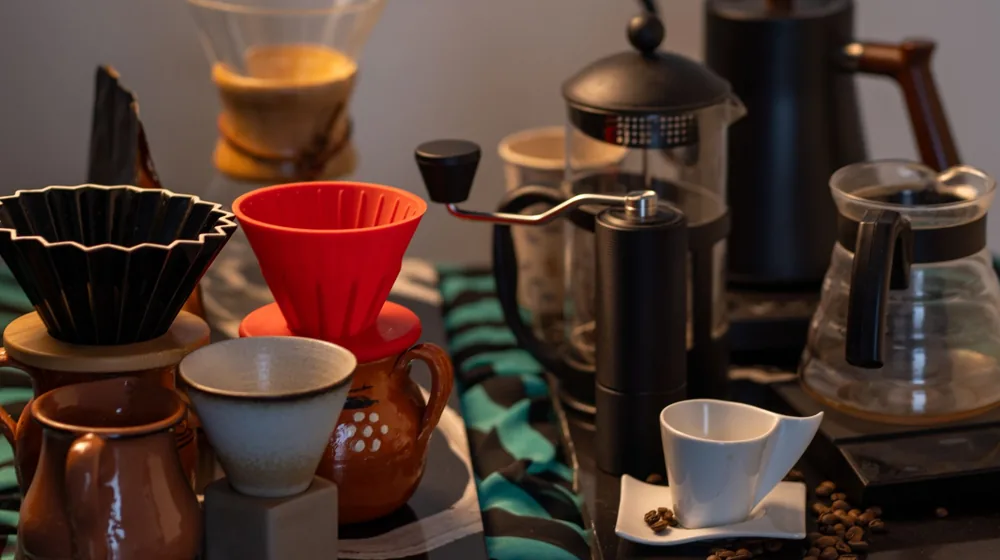

첫 홈 로스팅 성공률 높이는 비결, 원두 로스팅 준비 체크리스트
사진: Jonathan Borba / Pexels (무료 이미지, 출처 표기)
집에서 직접 로스팅한 신선한 커피, 어떻게 시작할까요?

집에서 직접 로스팅한 신선한 커피를 꿈꾸시나요? 막상 시작하려니 어떤 생두를 골라야 할지, 어떤 장비가 필요한지 막막하게 느껴질 수 있습니다. 이 글에서는 첫 홈 로스팅을 성공으로 이끄는 데 필요한 모든 준비 과정을 체크리스트 형태로 자세히 안내해 드립니다. 준비물을 꼼꼼히 확인하고 나만의 완벽한 커피를 만들어보세요.
나에게 맞는 생두 고르기: 원산지와 품종별 특징
홈 로스팅의 첫걸음은 좋은 생두(볶지 않은 커피콩)를 선택하는 것입니다. 생두는 커피 맛의 80% 이상을 결정한다고 해도 과언이 아닙니다. 크게 아라비카와 로부스타 품종으로 나뉘며, 원산지별로 독특한 맛과 향을 가집니다.
- 아라비카(Arabica): 전 세계 커피 생산량의 60% 이상을 차지하며, 섬세한 향미와 산미, 부드러운 바디감이 특징입니다. 에티오피아 예가체프, 콜롬비아 수프리모, 브라질 산토스 등이 대표적입니다. 홈 로스팅 초보자에게 가장 추천하는 품종입니다.
- 로부스타(Robusta): 쓴맛과 강한 바디감이 특징이며, 카페인 함량이 높습니다. 주로 인스턴트커피나 에스프레소 블렌딩에 사용됩니다.
초보자라면 부드러운 산미와 복합적인 향미를 가진 에티오피아나 콜롬비아산 아라비카 생두로 시작하는 것이 좋습니다. 처음에는 소량(200~500g)씩 구매하여 다양한 원산지의 맛을 경험해보고 자신에게 맞는 생두를 찾아보세요.
홈 로스팅 장비, 어떤 로스터가 적합할까?
로스팅 장비, 즉 로스터는 크게 수동식과 자동식으로 나눌 수 있으며, 가열 방식에 따라 종류가 다양합니다. 자신의 예산, 로스팅 양, 숙련도에 맞춰 적절한 로스터를 선택하는 것이 중요합니다. 2026년 11월 기준으로 시중에 판매되는 주요 로스터 종류와 특징은 다음과 같습니다.
처음에는 저렴한 수동식 장비나 에어 로스터로 시작하여 로스팅 감각을 익히고, 흥미가 붙으면 드럼 로스터로 업그레이드하는 것을 고려해볼 수 있습니다.
로스팅 성공을 위한 필수 보조 도구
로스터 외에도 몇 가지 보조 도구들이 로스팅 과정의 효율성과 결과물의 품질을 높이는 데 큰 도움이 됩니다. 다음은 홈 로스팅 시 반드시 갖춰야 할 필수 도구들입니다.
- 온도계: 로스팅 온도를 정확히 측정하여 일정한 결과물을 얻는 데 필수적입니다. 로스터 내부에 설치하거나 외부에서 측정하는 방식이 있습니다.
- 타이머: 로스팅 시간을 정확히 기록하여 나중에 맛을 평가하고 개선할 때 중요한 기준점이 됩니다. 스마트폰 앱도 좋습니다.
- 쿨러(Cooler): 로스팅이 끝난 원두를 빠르게 식혀 과도한 로스팅을 막고 원두의 향미를 보존합니다. 채망과 선풍기를 활용하여 직접 만들 수도 있습니다.
- 저울: 생두의 무게를 정확히 측정하여 레시피를 일관성 있게 유지하는 데 필요합니다. 최소 0.1g 단위까지 측정 가능한 정밀 저울을 추천합니다.
- 환기 시설: 로스팅 과정에서 발생하는 연기와 채프(Chaff, 커피콩 껍질)를 외부로 배출할 수 있는 환경이 중요합니다. 창문을 열거나 후드를 사용하세요.
로스팅 전후 반드시 지켜야 할 안전 및 위생 수칙
안전하고 위생적인 로스팅 환경은 맛있는 커피만큼 중요합니다. 다음 사항들을 꼭 확인하세요.
- 환기: 로스팅 중에는 많은 연기와 미세한 채프가 발생합니다. 반드시 창문을 열거나 환풍기를 사용하여 충분히 환기해야 합니다.
- 청소: 로스팅 전후로 장비를 깨끗이 청소하여 이물질이나 지난 로스팅에서 남은 채프가 타는 것을 방지하고 위생을 유지합니다.
- 화재 예방: 고온의 장비를 사용하므로 주변에 인화성 물질을 두지 않고, 비상시를 대비해 소화기를 비치하는 것이 좋습니다.
- 보관: 로스팅 직후의 원두는 가스 배출(디개싱) 과정이 필요하므로 밀폐용기에 담아 3~5일 정도 숙성시킨 후 사용하는 것이 가장 좋습니다. 직사광선을 피하고 서늘한 곳에 보관하세요.
초보자를 위한 원두 로스팅 과정 요약
준비물을 모두 갖추었다면, 이제 로스팅을 시작할 차례입니다. 기본적인 로스팅 과정은 다음과 같습니다.
- 생두 준비: 원하는 양의 생두를 저울로 정확히 측정한 후, 이물질이 있는지 확인하고 제거합니다.
- 로스터 예열: 선택한 로스터의 종류에 따라 적정 온도까지 예열합니다. (예: 드럼 로스터는 180~200℃)
- 생두 투입 및 건조: 예열된 로스터에 생두를 투입하고, 약 4~6분간 생두 내부의 수분을 날리는 건조 단계를 진행합니다. 생두 색이 노랗게 변합니다.
- 1차 크랙(First Crack): 온도가 오르면서 생두 내부의 압력으로 '탁탁' 터지는 소리가 나기 시작합니다. 이 시점부터 로스팅 정도를 조절하며 원하는 배전도(로스팅 정도)에 도달하도록 합니다.
- 2차 크랙(Second Crack) (선택): 1차 크랙 후 약 2~3분 뒤 미세하게 '파바박' 하는 소리가 나는데, 이때부터는 급격하게 로스팅이 진행되므로 주의해야 합니다.
- 배출 및 냉각: 목표 배전도에 도달하면 즉시 원두를 로스터에서 배출하고, 쿨러를 사용하여 빠르게 식힙니다.
- 보관 및 숙성: 식은 원두를 밀폐용기에 담아 약 3~5일간 디개싱(Degassing) 기간을 거친 후 분쇄하여 추출합니다.
각 단계별 시간과 온도는 로스터 종류, 생두 특성, 개인의 선호도에 따라 달라질 수 있으니, 여러 번 시도하며 자신만의 최적 레시피를 찾아보세요.
자주 묻는 질문: 로스팅 관련 궁금증 해소
Q1: 로스팅 후 원두는 바로 마셔도 되나요?
A1: 로스팅 직후에는 원두에서 이산화탄소가 활발히 배출되는 디개싱(Degassing) 과정이 필요합니다. 보통 3~5일 정도 숙성시키면 맛과 향이 안정되고 풍부해집니다. 이 기간을 거치지 않고 바로 마시면 풋내나 거친 맛이 날 수 있습니다.
Q2: 로스팅 중 연기가 너무 많이 나는데 정상인가요?
A2: 로스팅 과정에서는 어느 정도 연기가 발생하는 것이 정상입니다. 특히 후반부로 갈수록 연기가 많아집니다. 하지만 과도한 연기는 생두가 타고 있거나 로스팅 온도가 너무 높다는 신호일 수 있습니다. 충분한 환기 시설을 갖추고 온도를 조절하며 로스팅하세요.
Q3: 로스팅 정도(배전도)는 어떻게 알 수 있나요?
A3: 배전도는 원두의 색상 변화와 크랙 소리를 통해 판단합니다. 라이트(Light), 시티(City), 풀 시티(Full City), 프렌치(French) 등 다양한 배전도가 있으며, 1차 크랙 시점부터 원두의 색 변화를 주의 깊게 관찰하고 향을 맡아보며 감각을 익히는 것이 중요합니다. 시중의 로스팅 가이드나 샘플 원두를 참고하는 것도 좋은 방법입니다.
🔗 이 글도 함께 보면 좋아요: 새해 목표, 작심삼일 끝! SMART 기법으로 성공률 80% 높이는 비결
관련 추천 상품
커피 로스터기, 생두, 홈카페 관련 인기 상품 보러가기
이 포스팅은 쿠팡 파트너스 활동의 일환으로, 이에 따른 일정액의 수수료를 제공받습니다.